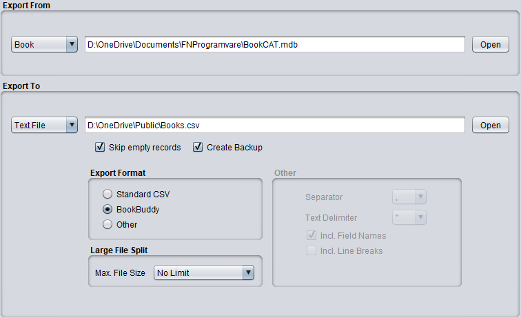
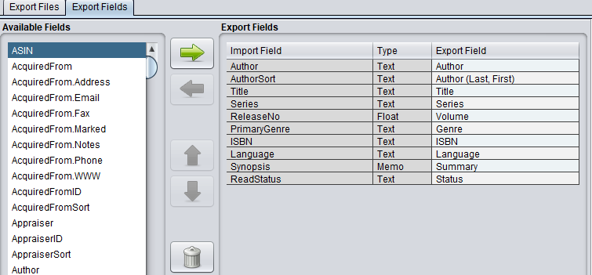
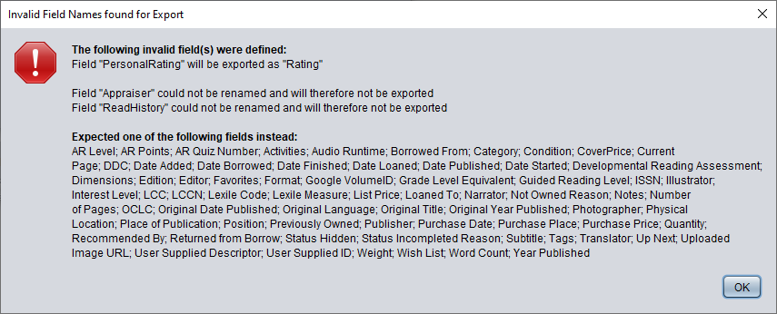

Export To BookBuddy
If you have selected the Book table in the BookCAT database, you'll have an additional CSV format option
in the Texfile export to create a valid BookBuddy import file. BookBuddy is a powerful Book collecting
app that runs on the Apple iPhone and iPad. It is developed by Kimico,Ltd.

Export Format
Here you can select the text format to export to.
- Standard CSV File
Creates a standard CSV File that can be imported directly in HanDBase,
JFile, SmartList to Go, MS-Excel or other program.
- BookBuddy
Creates a BookBuddy compatible CSV file.
- Other
Creates a delimited text file according to your own requirements.
Large File Split
Many import programs place a limit on the size of a texfile. Here you can define the maximum allowed
file size limit, so that FNProg2PDA splits the textfile into smaller pieces in case the export file
exceeds the file size limitation.
Other
The right part of the screen contains the options for setting up an export file to your own requirements
It contains of the following parts
- Field Separator
By selecting the field separator you can either create a Comma-, Tab- or Semicolon- or Pipe delimited file
- Text Delimiter
This specifies the text delimiter (to enclose all database fields).
- Include
Here you specify whether the first line of your file should contain the database field 'Headers' and
whether it is allowed that the export file contains line breaks (carriage return) characters.
Notes:
If BookBuddy is selected then FNProg2PDA will preload the minimal required fields to be exported and
sort order (by Author, Series, ReleaseNo and Title).

Valid BookBuddy fields:
AR Level,AR Points, AR Quiz Number, Activities, Audio Runtime, Author (Last, First), Author, Borrowed From,
Category, Condition, CoverPrice, Current Page, DDC, Date Added, Date Borrowed, Date Finished, Date Loaned,
Date Published, Date Started, Developmental Reading Assessment, Dimensions, Edition, Editor, Favorites,
Format, Genre, Google VolumeID, Grade Level Equivalent, Guided Reading Level, ISBN, ISSN, Illustrator,
Interest Level, LCC, LCCN, Language, Lexile Code, Lexile Measure, List Price, Loaned To, Narrator,
Not Owned Reason, Notes, Number of Pages, OCLC, Original Date Published, Original Language, Original Title,
Original Year Published, Photographer, Physical Location, Place of Publication, Position, Previously Owned,
Publisher, Purchase Date, Purchase Place, Purchase Price, Quantity, Rating, Recommended By, Returned from Borrow,
Series, Status Hidden, Status Incompleted Reason, Status, Subtitle, Summary, Tags, Title, Translator,
Up Next, Uploaded Image URL, User Supplied Descriptor, User Supplied ID,Volume, Weight,Wish List,
Word Count and Year Published
If you would enter an invalid BookCAT field then FNProg2PDA will try to match it with the corresponding
BookBuddy field. If a match is found the field with be renamed. If no match is found the field will not be
exported. In both cases a similar screen like the one below will be shown.
